decks i'm considering
As I gear up for the upcoming qualifiers, I’m diving into a selection of decks that I believe will give me a competitive edge. Each deck has its unique strengths and strategies, and I’m excited to explore their potential. Here’s a detailed look at the decks I'm evaluating:
boros burn
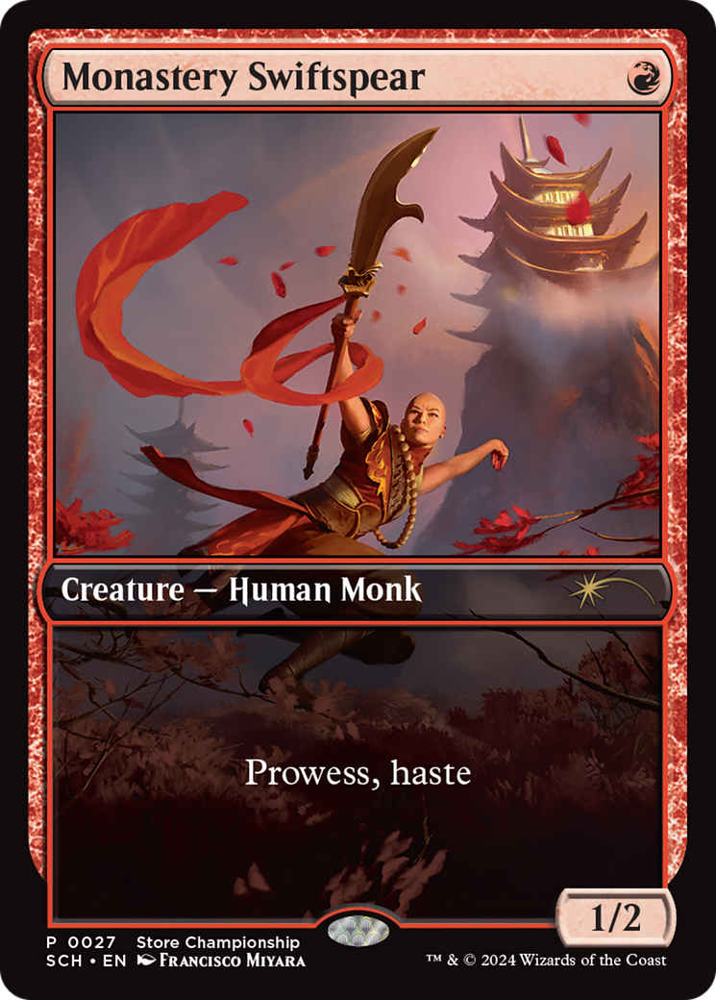
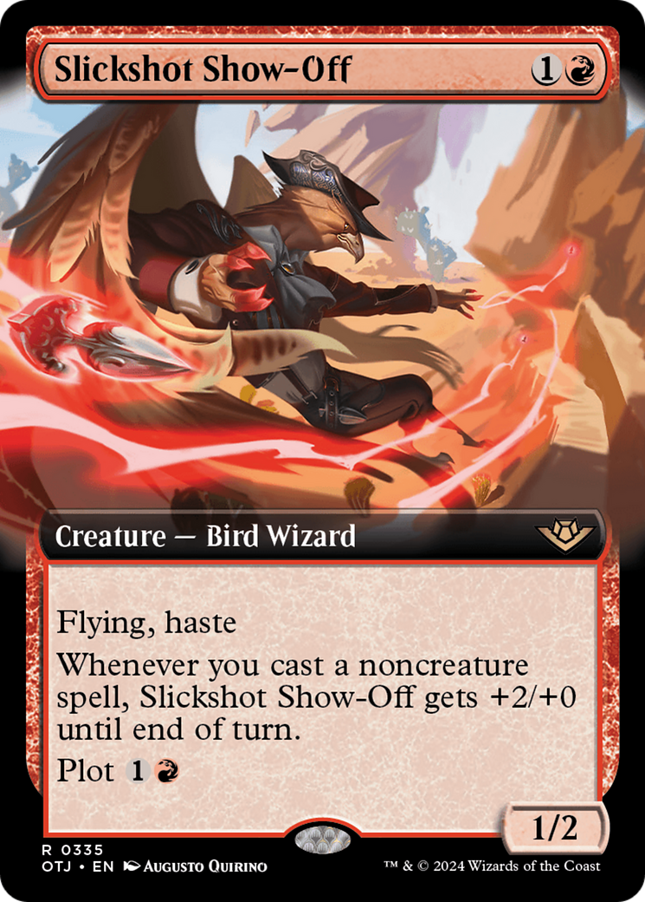
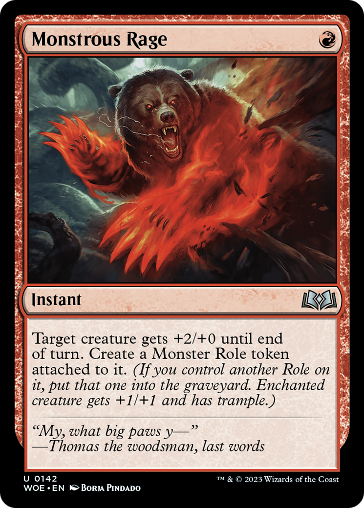
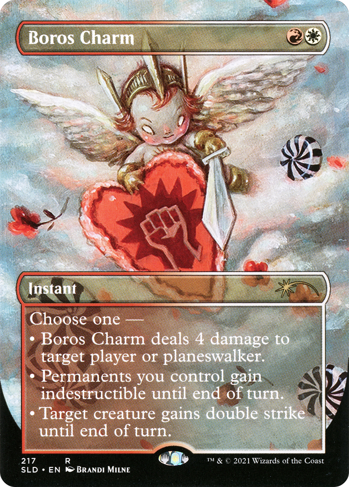
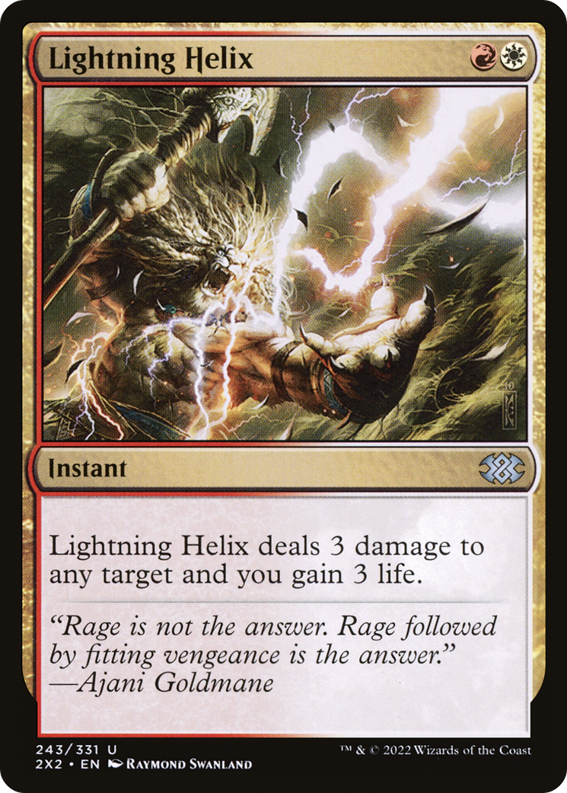
Boros Burn is an aggressive deck focused on dealing direct damage to opponents through a combination of efficient spells and high-tempo creatures. This deck thrives on applying consistent pressure and leveraging its spells to quickly reduce an opponent’s life total.
The deck's core strategy revolves around efficient, low-cost spells that can deal damage directly to opponents or their creatures. Kumano Faces Kakkazan // Etching of Kumano provides early pressure and damage through its Saga effects, while Monastery Swiftspear and Soul-Scar Mage capitalize on the numerous instants and sorceries to deal additional damage. These creatures are enhanced by spells like Play with Fire and Searing Blood, which further contribute to the damage output.
For additional burn and card advantage, the deck includes Light Up the Stage, which helps to refill your hand and maintain momentum. Monstrous Rage is a powerful spell for pumping up your creatures and dealing damage, and Boros Charm provides versatile options for dealing damage or protecting your creatures from removal. Lightning Helix offers both damage and life gain, which can be crucial in tight matches.
The land base supports the aggressive strategy with a mix of fast lands and utility lands. Battlefield Forge, Inspiring Vantage, and Sacred Foundry provide consistent access to red and white mana, while Den of the Bugbear and Sokenzan, Crucible of Defiance offer additional utility by providing creature options or extra damage. Needleverge Pathway // Pillarverge Pathway ensures flexibility in mana production.
The sideboard contains several tools to handle a variety of matchups. End the Festivities offers an additional way to deal with multiple small creatures, while Deflecting Palm can be crucial against other burn strategies by redirecting damage. Get Lost provides additional disruption and answers to certain threats. Kari Zev's Expertise and Rampaging Ferocidon offer versatile answers to various strategies, and Roiling Vortex can be used to further pressure opponents or mitigate life gain.
Boros Burn excels in metagames where speed and direct damage are crucial. Its ability to apply constant pressure and finish games quickly makes it a formidable choice in aggressive and control-oriented matchups alike.
Main Deck
- 4 Battlefield Forge
- 2 Den of the Bugbear
- 4 Inspiring Vantage
- 2 Mountain
- 1 Needleverge Pathway // Pillarverge Pathway
- 2 Ramunap Ruins
- 4 Sacred Foundry
- 1 Sokenzan, Crucible of Defiance
- 4 Kumano Faces Kakkazan // Etching of Kumano
- 4 Monastery Swiftspear
- 4 Soul-Scar Mage
- 4 Slickshot Show-Off
- 4 Play with Fire
- 4 Light Up the Stage
- 4 Monstrous Rage
- 4 Boros Charm
- 4 Searing Blood
- 2 Wild Slash
- 2 Lightning Helix
Sideboard
- 2 End the Festivities
- 2 Deflecting Palm
- 2 Get Lost
- 2 Lightning Helix
- 2 Case of the Crimson Pulse
- 2 Kari Zev's Expertise
- 2 Rampaging Ferocidon
- 1 Roiling Vortex
mono green ramp
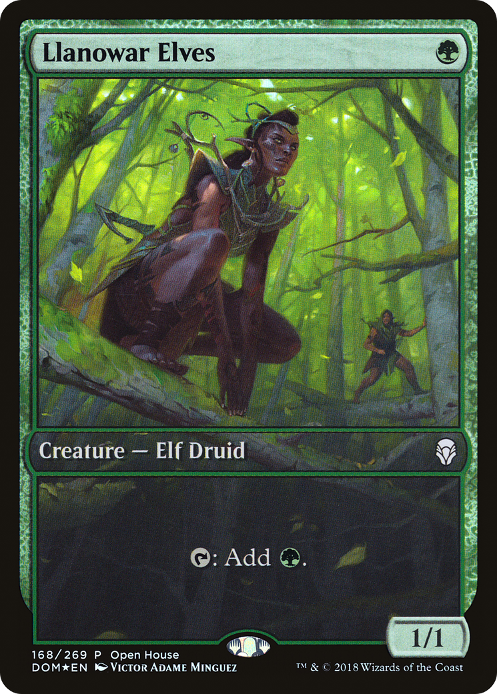
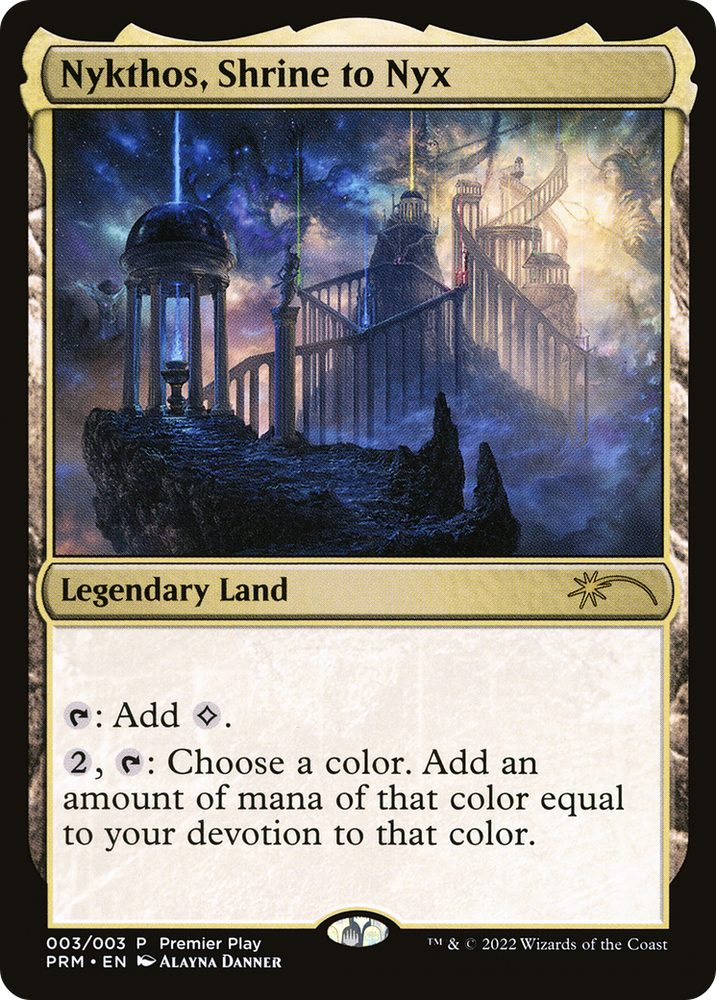
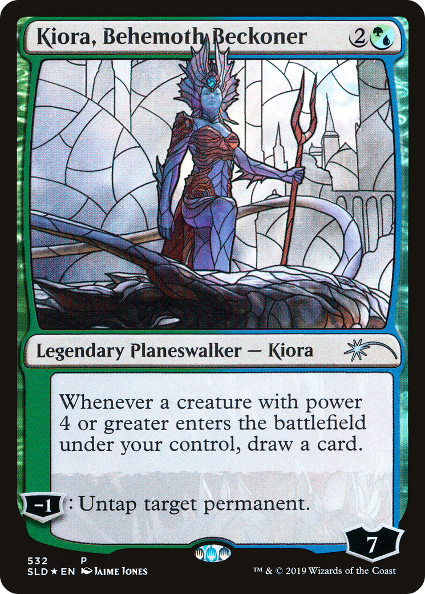
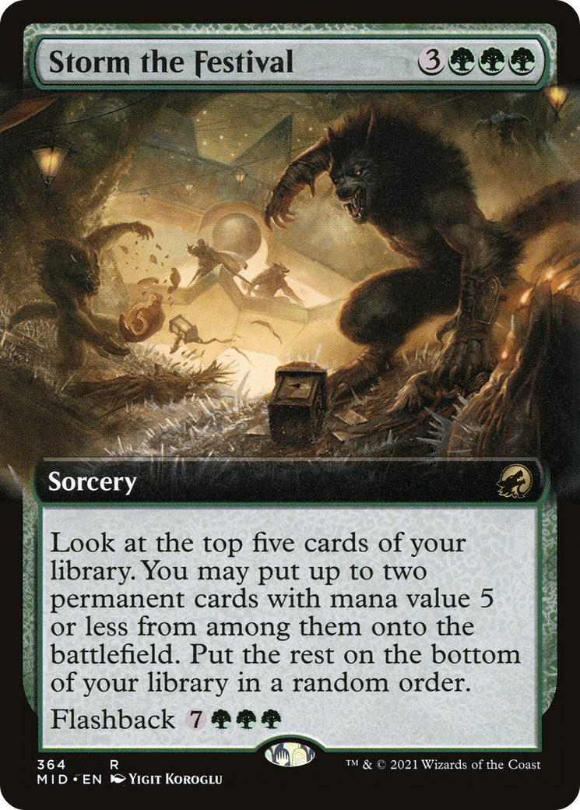
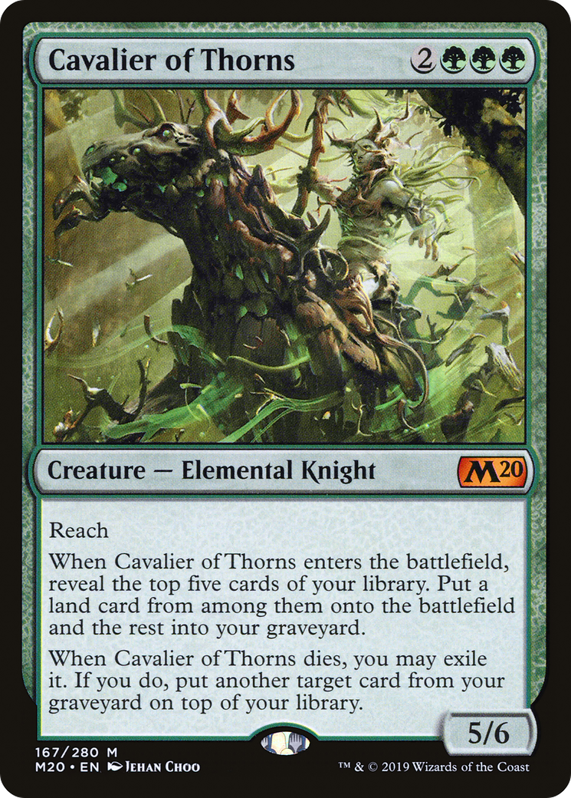
Mono Green Ramp is a robust deck designed to accelerate mana production and unleash powerful threats early in the game. This deck focuses on generating a large amount of green mana to cast high-impact creatures and spells, leveraging the synergy between ramping effects and powerful, game-changing threats.
The core of the deck includes efficient mana ramp cards such as Elvish Mystic and Llanowar Elves, which provide a steady flow of green mana to support the deck’s high mana demands. Cavalier of Thorns and Old-Growth Troll offer both ramp and substantial creature presence, while Storm the Festival allows for impactful plays by casting multiple permanents from the top of your library.
The deck also features powerful threats such as Elesh Norn, Mother of Machines, which can significantly impact the game with its ability to double triggers and hinder opponents' strategies. Polukranos Reborn // Polukranos, Engine of Ruin and Ulvenwald Oddity // Ulvenwald Behemoth provide versatility and massive power, making them formidable additions to the deck. Kiora, Behemoth Beckoner helps further accelerate mana production and provides card draw by interacting with your large creatures.
The land base is structured to support the deck’s needs with a mix of utility lands and ramp sources. Nykthos, Shrine to Nyx plays a crucial role in boosting your mana production, while Boseiju, Who Endures offers a way to deal with problematic nonland permanents. The inclusion of Temple Garden and Sunken Citadel ensures you have access to different types of mana sources, and Hostile Hostel // Creeping Inn provides a versatile land with additional utility.
The sideboard contains a variety of tools to address different matchups. Deafening Silence is useful against decks that rely on spells, while additional copies of Elesh Norn, Mother of Machines and Polukranos Reborn // Polukranos, Engine of Ruin provide more flexibility for different scenarios. Obstinate Baloth is included for its resilience against discard and its life gain ability. Pick Your Poison and Tail Swipe offer additional removal and interaction options, and The Stone Brain provides a tool for dealing with specific strategies by exiling cards from an opponent's deck.
Mono Green Ramp excels in metagames where accelerating mana and deploying large threats quickly can outpace opponents. The deck’s ability to generate substantial mana and cast powerful creatures makes it a formidable choice against a variety of strategies.
Main Deck
- 2 Invasion of Ixalan // Belligerent Regisaur
- 4 Cavalier of Thorns
- 1 Elesh Norn, Mother of Machines
- 4 Elvish Mystic
- 4 Llanowar Elves
- 4 Old-Growth Troll
- 4 Outcaster Trailblazer
- 1 Polukranos Reborn // Polukranos, Engine of Ruin
- 1 Ulvenwald Oddity // Ulvenwald Behemoth
- 4 Leyline of the Guildpact
- 2 Oath of Nissa
- 2 Boseiju, Who Endures
- 6 Forest
- 1 Hostile Hostel // Creeping Inn
- 2 Lair of the Hydra
- 4 Storm the Festival
- 4 Nykthos, Shrine to Nyx
- 4 Kiora, Behemoth Beckoner
- 4 Temple Garden
- 2 Sunken Citadel
Sideboard
- 3 Deafening Silence
- 1 Elesh Norn, Mother of Machines
- 1 Polukranos Reborn // Polukranos, Engine of Ruin
- 1 Forest
- 2 Obstinate Baloth
- 3 Pick Your Poison
- 2 Tail Swipe
- 2 The Stone Brain
izzet phoenix
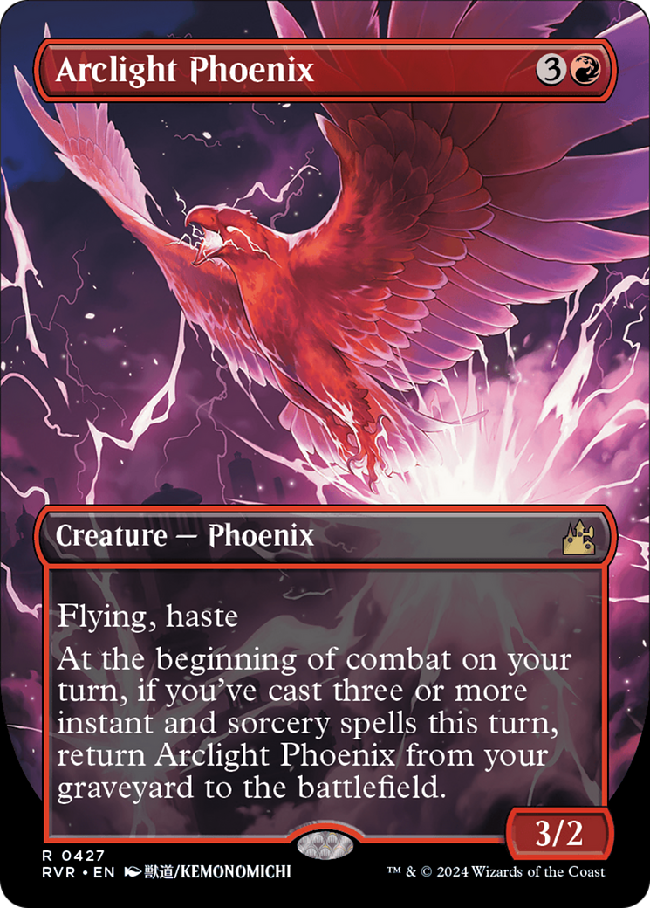
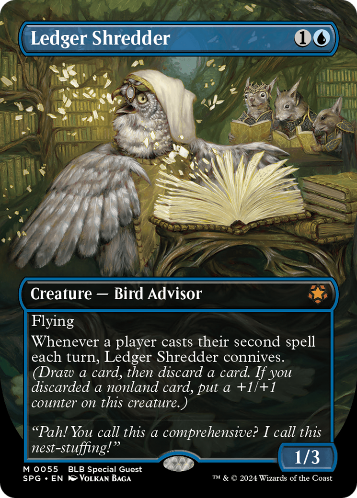
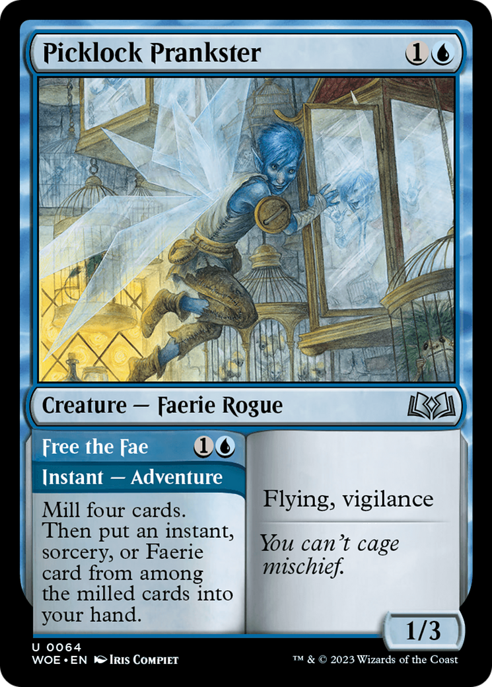
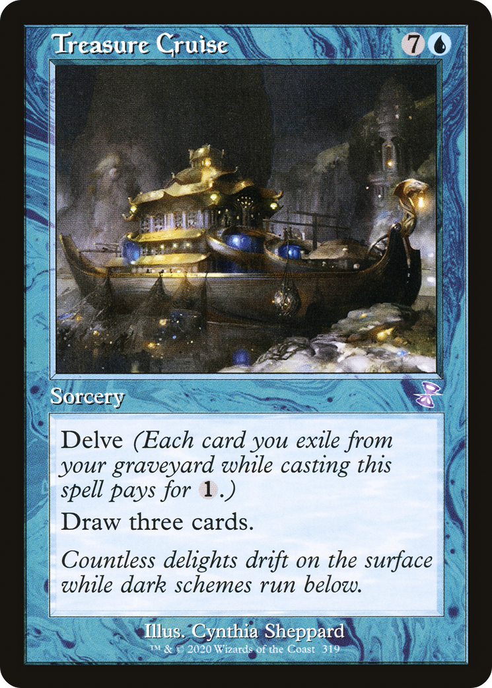
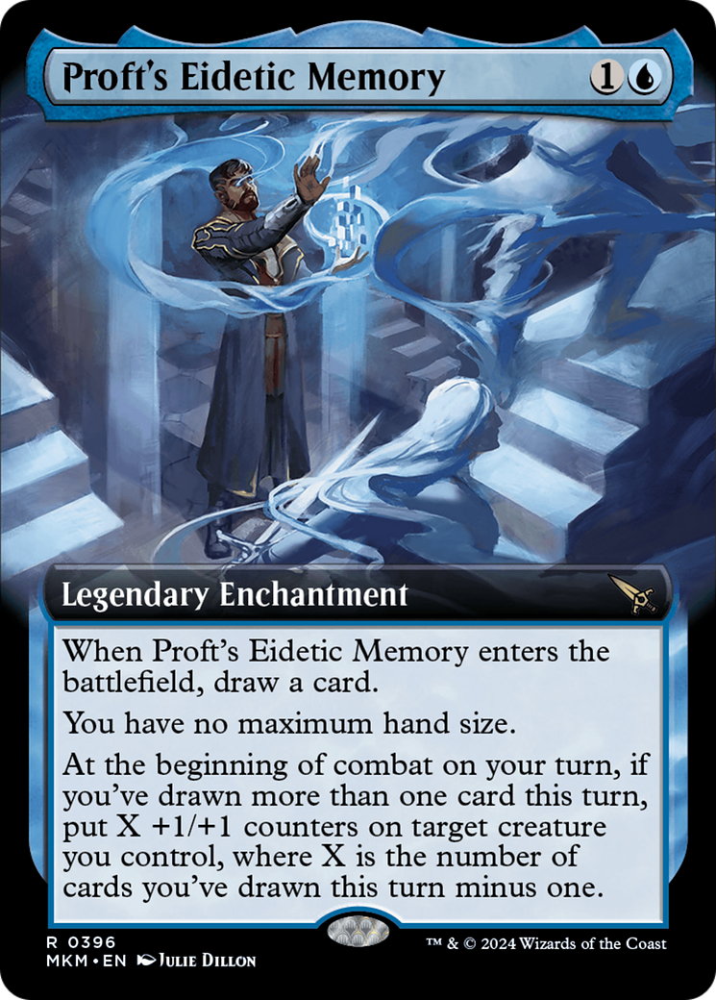
Izzet Phoenix is a powerful and spell-centric deck renowned for its explosive potential and graveyard recursion. At the heart of this strategy is the Arclight Phoenix, a recurring threat that can swiftly return to the battlefield with the help of a suite of instants and sorceries. The deck is designed to maximize the value of these spells, leveraging card draw and efficient removal to maintain pressure on opponents.
The core of the deck revolves around key card-drawing spells like Treasure Cruise, Consider, Opt, and Sleight of Hand, which not only help find and recur Arclight Phoenix but also ensure a steady flow of resources. Ledger Shredder and Picklock Prankster offer synergy by filtering through the deck and filling the graveyard with valuable cards to fuel the Phoenix’s return. Early removal options such as Lightning Axe and Fiery Impulse help manage threats and clear the path for your attacks.
Utility cards like Prismari Command and Spikefield Hazard provide additional versatility, offering both damage and useful effects. The land base is well-constructed with a combination of shock lands and fast lands including Riverglide Pathway, Spirebluff Canal, and Steam Vents, ensuring reliable mana sources. Hall of Storm Giants and Otawara, Soaring City serve as dual-purpose lands that can also act as threats or answers when needed.
The sideboard features a range of options to tackle various matchups. Aether Gust and Mystical Dispute offer valuable counterspells and disruption, while Beacon Bolt and Anger of the Gods provide additional removal and board wipe capabilities. Crackling Drake serves as an additional threat to put pressure on opponents, and Ashiok, Dream Render is included for graveyard disruption. The sideboard also contains Thing in the Ice for transforming and resetting the board state, and Unlicensed Hearse for further graveyard control.
Izzet Phoenix excels in metagames where efficient spell play, graveyard recursion, and powerful threats can dominate. The deck's combination of card advantage, robust threats, and versatile answers makes it a strong contender in both aggressive and control-oriented matchups.
Main Deck
- 4 Arclight Phoenix
- 4 Ledger Shredder
- 1 Brazen Borrower
- 4 Lightning Axe
- 4 Picklock Prankster
- 4 Treasure Cruise
- 4 Consider
- 4 Opt
- 1 Prof's Eidetic Memory
- 4 Fiery Impulse
- 3 Island
- 1 Hall of Storm Giants
- 4 Riverglide Pathway
- 4 Spirebluff Canal
- 4 Steam Vents
- 1 Stormcarved Coast
- 2 Spell Pierce
- 1 Otawara, Soaring City
- 4 Sleight of Hand
- 1 Prismari Command
- 1 Spikefield Hazard
Sideboard
- 1 Aether Gust
- 2 Mystical Dispute
- 1 Beacon Bolt
- 1 Disdainful Stroke
- 1 Brotherhood's End
- 1 Negate
- 2 Crackling Drake
- 1 Ashiok, Dream Render
- 2 Young Pyromancer
- 1 Anger of the Gods
- 1 Unlicensed Hearse
- 1 Thing in the Ice
mono white humans
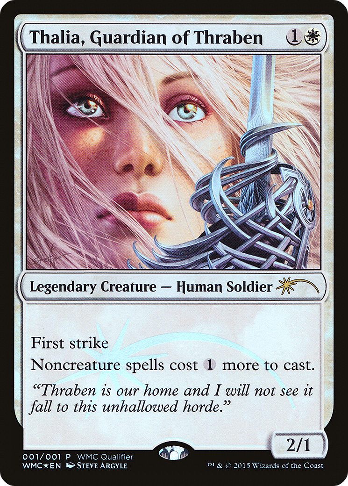
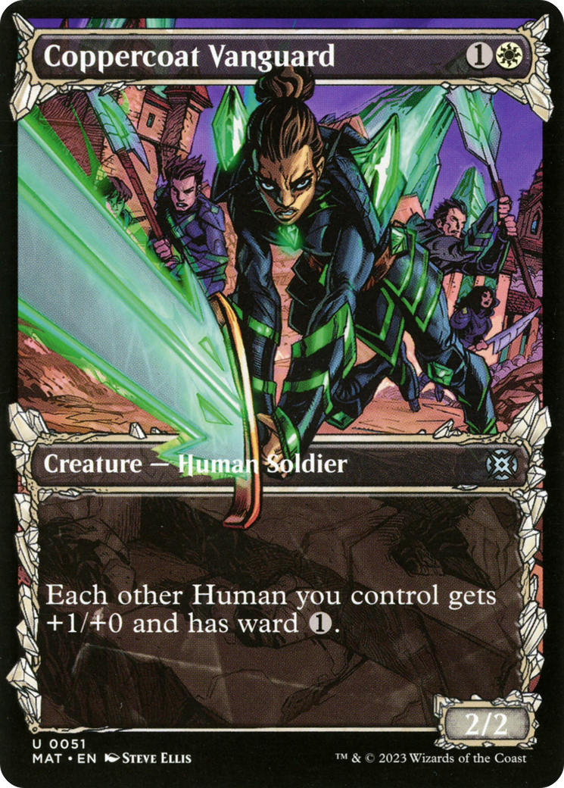
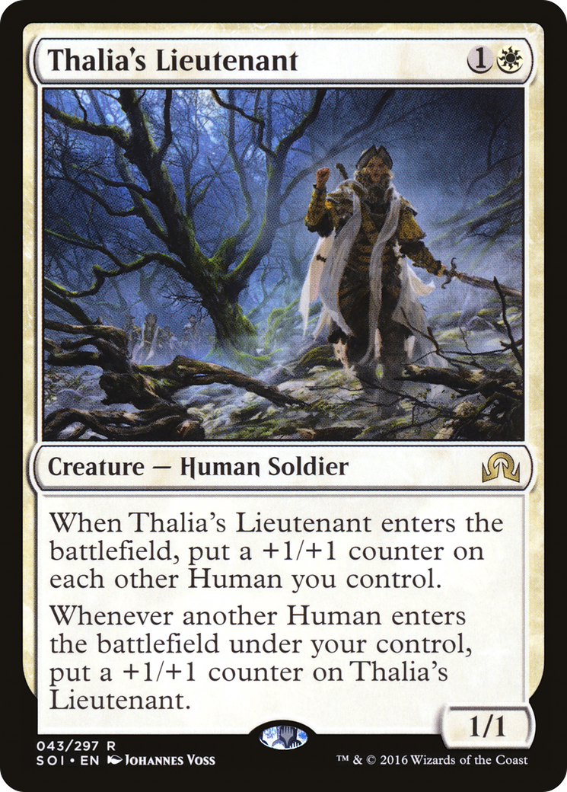
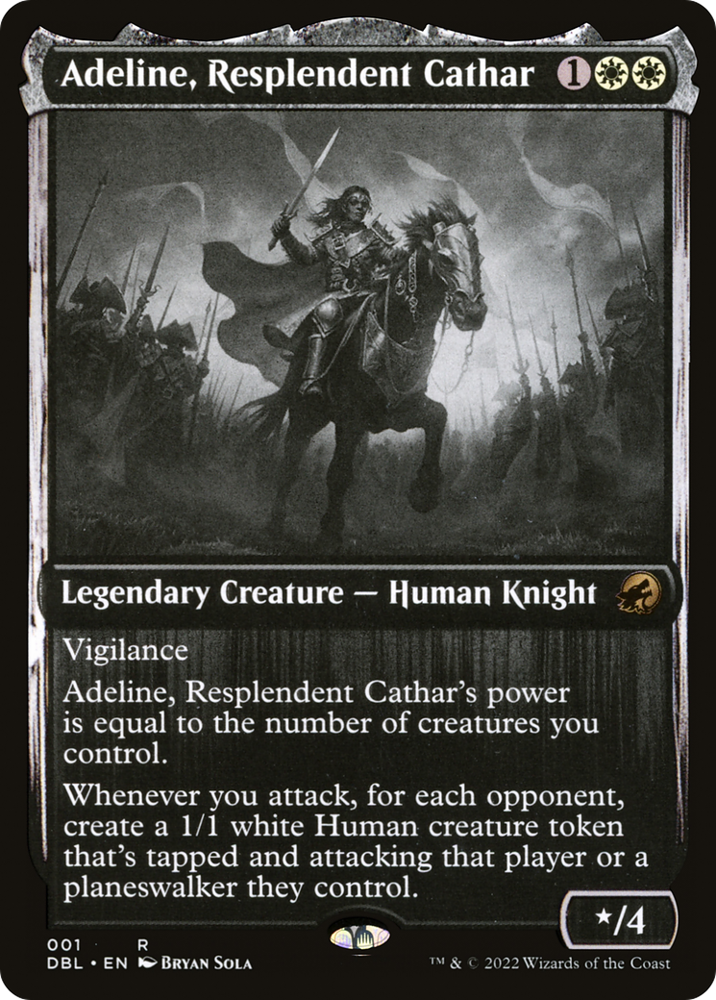
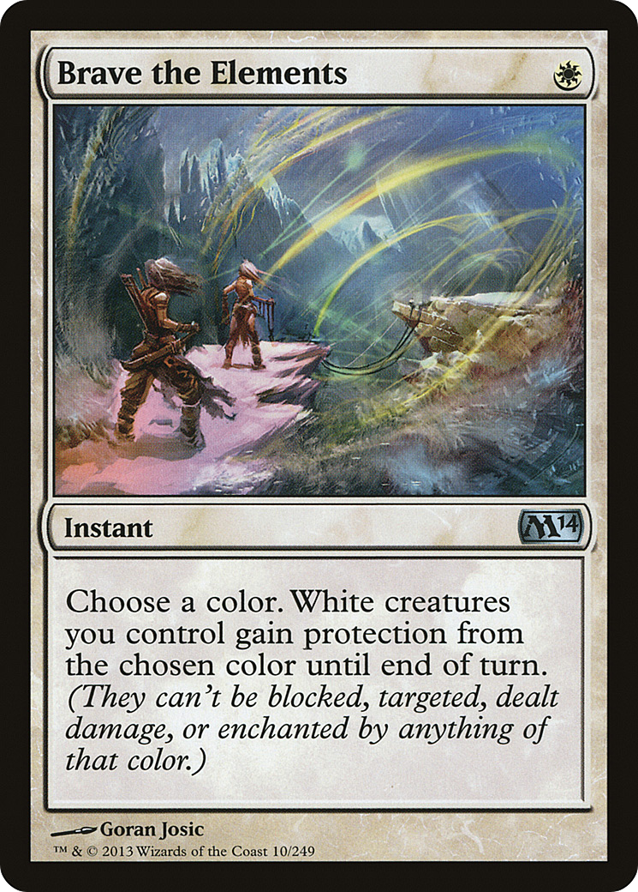
White Aggro is a fast-paced and aggressive deck known for its powerful synergy among human creatures and its ability to quickly build a formidable board presence. Central to this deck’s strategy is the combination of efficient creatures and protective spells that can quickly overwhelm opponents with a barrage of attacks. This deck excels at leveraging the strengths of its white creatures and utilizing various utility cards to maintain pressure and disrupt opponents.
The deck's core features key human creatures like Thalia's Lieutenant and Adeline, Resplendent Cathar, which synergize to grow your board and provide consistent threats. Cards such as Hopeful Initiate and Coppercoat Vanguard offer aggressive early plays and help in quickly building a strong presence on the battlefield. Thalia, Guardian of Thraben adds disruptive value by taxing non-creature spells, making it harder for opponents to execute their strategies.
Protection and utility are crucial with cards like Brave the Elements, which can protect your team from removal spells and ensure that your creatures can safely attack. Containment Priest provides disruption against decks relying on graveyard strategies or reanimation, while Recruitment Officer offers card advantage by digging through the deck to find more crucial pieces of the deck's strategy.
The land base includes a mix of utility lands like Castle Ardenvale for generating tokens and Eiganjo, Seat of the Empire for versatile effects. The inclusion of Cavern of Souls ensures that your key creatures are protected from being countered, adding a layer of resilience against control decks. The use of Mutavault further enhances the deck's ability to activate creature abilities and synergize with creature-based strategies.
The sideboard is tailored to address a variety of matchups and includes cards such as Portable Hole for dealing with artifacts and enchantments, and Rest in Peace to counter graveyard-based strategies. Additional options like Brutal Cathar // Moonrage Brute offer further removal and threats, while Reidane, God of the Worthy // Valkmira, Protector's Shield provides valuable utility against specific strategies and ramp decks.
White Aggro thrives in metagames where quick, efficient attacks and strong creature synergies can dominate. The deck's combination of aggressive creatures, protective spells, and versatile answers makes it a formidable choice for both aggressive and midrange matchups.
Main Deck
- 2 Castle Ardenvale
- 2 Cavern of Souls
- 2 Eiganjo, Seat of the Empire
- 4 Mutavault
- 12 Plains
- 4 Brave the Elements
- 3 Dauntless Bodyguard
- 4 Hopeful Initiate
- 2 Kytheon, Hero of Akros // Gideon, Battle-Forged
- 3 Recruitment Officer
- 3 Containment Priest
- 4 Coppercoat Vanguard
- 3 Get Lost
- 4 Thalia's Lieutenant
- 4 Thalia, Guardian of Thraben
- 4 Adeline, Resplendent Cathar
Sideboard
- 3 Portable Hole
- 2 Divine Smite
- 1 Get Lost
- 3 Invasion of Gobakhan // Lightshield Array
- 2 Rest in Peace
- 2 Brutal Cathar // Moonrage Brute
- 2 Reidane, God of the Worthy // Valkmira, Protector's Shield
5C Humans
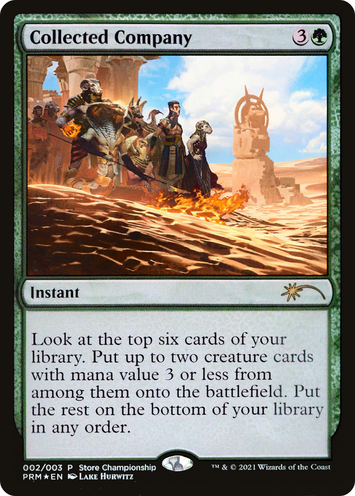
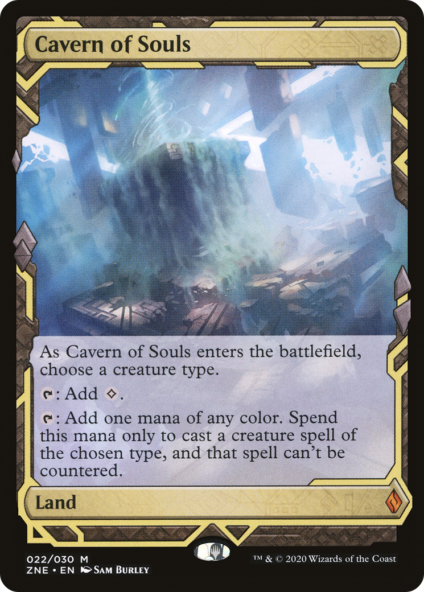
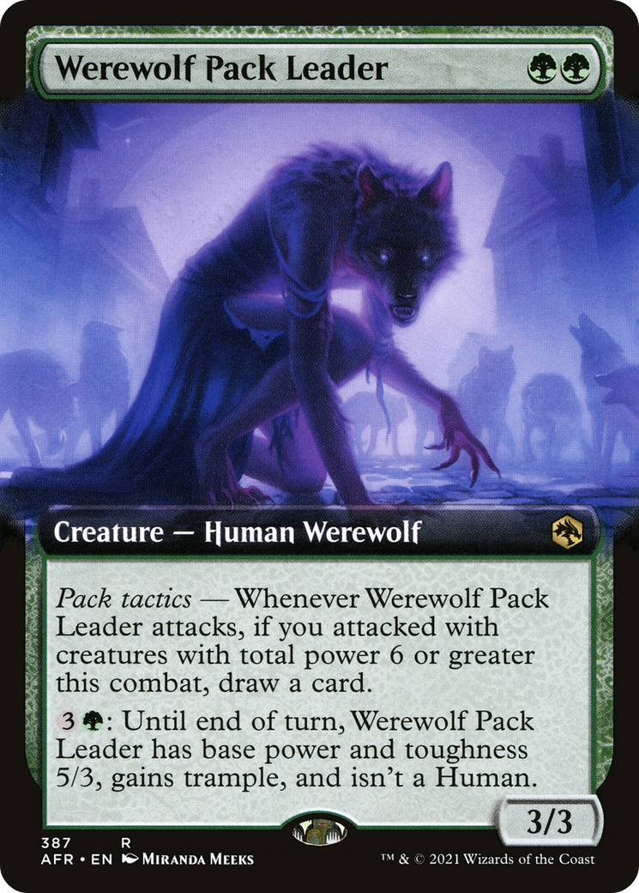
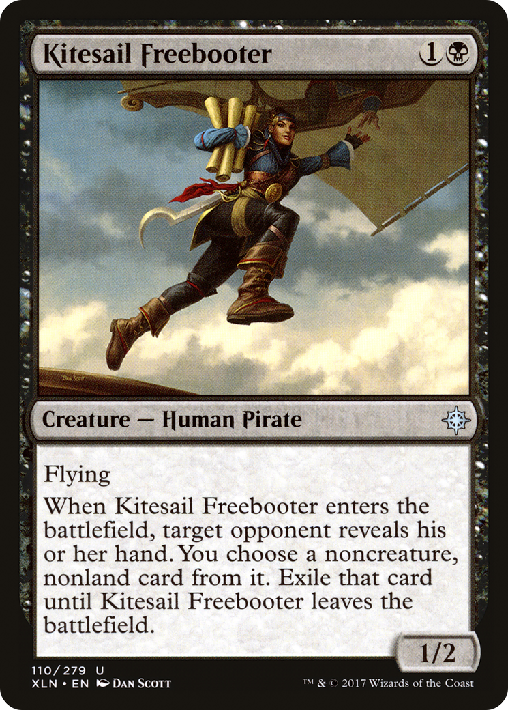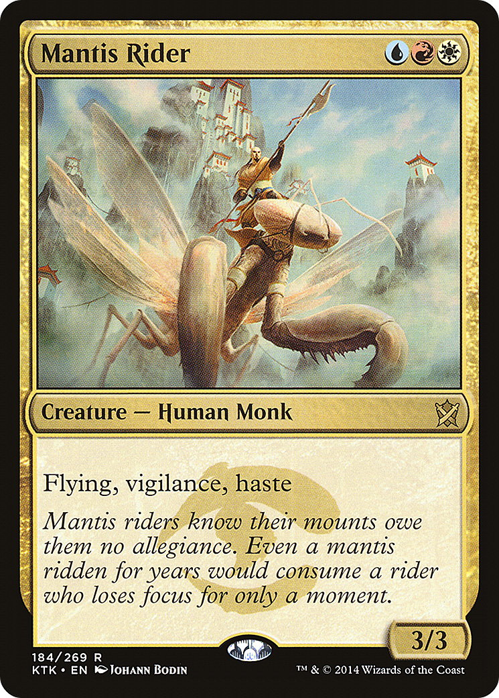
5C Humans is a versatile and aggressive deck that utilizes a wide range of Human creatures to apply pressure on opponents. This deck aims to take advantage of Collected Company to bring multiple creatures onto the battlefield, often resulting in overwhelming board presence.
The core strategy involves deploying a variety of Humans with different abilities to synergize and overwhelm opponents. Thalia's Lieutenant boosts the power of your Humans as they enter the battlefield, while Adeline, Resplendent Cathar and Mantis Rider provide strong offensive options with their attacking prowess.
Utilizing Cavern of Souls and Unclaimed Territory ensures your Human creatures are protected from counterspells, making your aggression more reliable. Collected Company serves as a critical tool for maintaining momentum by putting multiple creatures directly onto the battlefield, further amplifying your board presence.
The deck's mana base includes a variety of lands like Temple Garden and Secluded Courtyard to ensure smooth color fixing, while Mana Confluence provides flexibility in casting spells. The inclusion of lands such as Cavern of Souls and Unclaimed Territory is crucial for avoiding counterspells and enhancing the deck’s consistency.
In the sideboard, cards like Jirina, Dauntless General and Brutal Cathar offer additional flexibility and answers to various threats, while Anointed Peacekeeper provides disruption against specific strategies. The sideboard is designed to help the deck adapt to different matchups and improve its performance against various archetypes.
5C Humans excels in creating a strong board presence and leveraging the synergy between its creatures to maintain pressure throughout the game. Its adaptability and power make it a competitive choice in the Pioneer format.
Main Deck
- 4 Cavern of Souls
- 4 Collected Company
- 4 Coppercoat Vanguard
- 3 Experiment One
- 3 Hopeful Initiate
- 3 Kitesail Freebooter
- 2 Mana Confluence
- 4 Mantis Rider
- 1 Plains
- 3 Razorverge Thicket
- 4 Reflector Mage
- 4 Secluded Courtyard
- 4 Temple Garden
- 3 Thalia, Guardian of Thraben
- 4 Thalia's Lieutenant
- 4 Unclaimed Territory
- 3 Werewolf Pack Leader
Sideboard
- 2 Anointed Peacekeeper
- 2 Brutal Cathar // Moonrage Brute
- 2 Extraction Specialist
- 3 Jirina, Dauntless General
- 2 Kambal, Consul of Allocation
- 3 Knight of Dusk's Shadow
- 1 Reidane, God of the Worthy // Valkmira, Protector's Shield